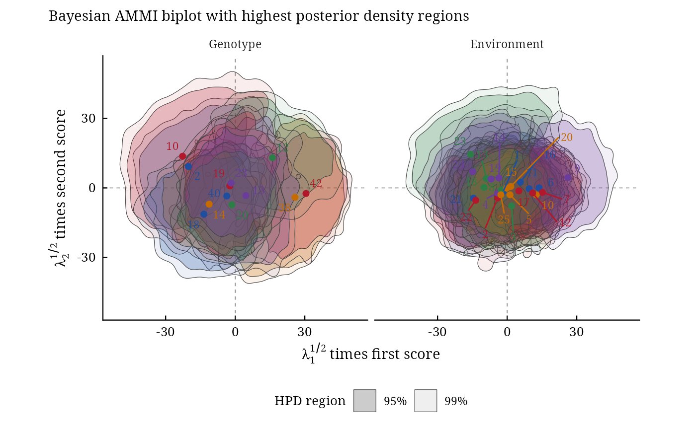

AMMI and GGE biplots with highest posterior density regions
Source:R/biplots.R
bayes_ammi_biplot.Rdbayes_ammi_biplot() and bayes_gge_biplot() draw the Bayesian AMMI or GGE (SREG) biplot of the
first two bilinear terms with a highest posterior density
(HPD) region around every genotype and environment (Crossa et al. 2011, Fig. 3 and 4). A region that contains the
origin marks a genotype or environment whose interaction is not different from zero (stable); regions that
overlap mark genotypes or environments that cannot be told apart, a homogeneous group.
Usage
bayes_ammi_biplot(
fit,
burnin = 0,
thin = 0.5,
pb = 0.05,
plot_stable = TRUE,
plot_unstable = TRUE,
ncolors = 5,
.which = c("both", "genotype", "environment"),
.grid = 100L
)
# Default S3 method
bayes_ammi_biplot(
fit,
burnin = 0,
thin = 0.5,
pb = 0.05,
plot_stable = TRUE,
plot_unstable = TRUE,
ncolors = 5,
.which = c("both", "genotype", "environment"),
.grid = 100L
)
bayes_gge_biplot(
fit,
burnin = 0,
thin = 0.5,
pb = 0.05,
plot_stable = TRUE,
plot_unstable = TRUE,
ncolors = 5,
.which = c("both", "genotype", "environment"),
.grid = 100L
)
# Default S3 method
bayes_gge_biplot(
fit,
burnin = 0,
thin = 0.5,
pb = 0.05,
plot_stable = TRUE,
plot_unstable = TRUE,
ncolors = 5,
.which = c("both", "genotype", "environment"),
.grid = 100L
)Arguments
- fit
a result of
bayes_ammi()with at least two terms: an AMMI fit forbayes_ammi_biplot(), a SREG (GGE) fit forbayes_gge_biplot()(bayes_gge()).- burnin
proportion of the stored draws of every chain discarded at its start (default 0).
- thin
proportion of the remaining draws used (default 0.5: every second draw).
- pb
one or more probabilities \(p\): the regions hold \(100(1 - p)\)% of the posterior (default 0.05, the 95% region;
c(0.05, 0.01)draws the 95% and 99% regions of the paper). The classification uses the first value.- plot_stable, plot_unstable
draw the regions that contain the origin, and those that do not (default both).
- ncolors
number of colours used for the regions (default 5).
- .which
"both"(default),"genotype"or"environment".- .grid
number of grid points per axis of the density estimate (default 100).
Value
An object of class c("bys_biplots", "bys_result", "list"), with the components of the earlier
version:
contornsdata.tableof the region boundaries:byplot(Genotype, Environment),ID(number),name,prob(the region, for instance "95%"),piece(a region can have several pieces),x,y,stable.biplot_datadata.table, one row per genotype and environment:byplot,ID,name,x,y(posterior means of the coordinates),stable(region contains the origin),axis1_lower,axis1_upper(marginal HPD interval of the first coordinate),axis1_significant(it excludes zero),group(sign of the first coordinate when significant: positive, negative, or not significant).biplotthe
ggplot.
Methods: print(), plot(), bys_interpret().
Details
The points are the biplot coordinates of the paper,
$$\left(\lambda_1^{1/2}\alpha_{i1}, \lambda_2^{1/2}\alpha_{i2}\right), \qquad
\left(\lambda_1^{1/2}\gamma_{j1}, \lambda_2^{1/2}\gamma_{j2}\right),$$
computed draw by draw. For each genotype and environment a bivariate kernel density \(\hat{f}\) is estimated
from the draws (normal kernels, normal reference bandwidths); the \(100(1 - p)\)% HPD region is
\(\{\mathbf{x} : \hat{f}(\mathbf{x}) \ge c_p\}\) with \(c_p\) the
\(p\)-quantile of \(\hat{f}\) at the draws, so that the region holds \(100(1 - p)\)% of
them. The region contains the origin when \(\hat{f}(\mathbf{0}) \ge c_p\) (stable). The
criterion of the paper, the marginal HPD interval of the first coordinate excluding zero, is given as
axis1_significant.
Changes from the earlier versions. The regions were drawn for the singular vectors without the factor \(\lambda_k^{1/2}\), with a fixed bandwidth of 0.2 whatever the scale; a genotype counted as stable when the bounding box of its contour covered the origin.
References
Crossa, J., Perez-Elizalde, S., Jarquin, D., Cotes, J. M., Viele, K., Liu, G. and Cornelius, P. L. (2011). Bayesian estimation of the additive main effects and multiplicative interaction model. Crop Science, 51(4), 1458–1469. doi:10.2135/cropsci2010.06.0343
Hyndman, R. J. (1996). Computing and graphing highest density regions. The American Statistician, 50(2), 120–126.
Author
Julian Garcia Abadillo Velasco (garciaabadillo.j@ufl.edu), Diego Jarquin (diego.jarquin@gmail.com), Muhammad Yaseen (myaseen208@gmail.com)
Examples
data(cultivo2009)
fm1 <-
bayes_ammi(
.data = cultivo2009
, .y = y
, .gen = entry
, .env = site
, .rep = rep
, .nIter = 1000
, .prior_data = NULL
, .n0 = NULL
, .model = "AMMI"
, .k = 2
, .burnin = 200
, .thin = 1
, .chains = 1
, .priors = bys_priors(
mu_mean = 0
, mu_var = 1e+8
, tau_mean = 0
, tau_var = 1e+8
, delta_mean = 0
, delta_var = 1e+8
, lambda_mean = 0
, lambda_var = 1e+8
, nu = 1
, s2 = NULL
)
, .level = 0.95
, .seed = 1
, .align = TRUE
, .waic = TRUE
)
bp <-
bayes_ammi_biplot(
fit = fm1
, burnin = 0
, thin = 1
, pb = c(0.05, 0.01)
, plot_stable = TRUE
, plot_unstable = TRUE
, ncolors = 5
, .which = "both"
, .grid = 100
)
bp$biplot

bp$biplot_data
#> Index: <stable>
#> byplot ID name x y stable axis1_lower
#> <char> <int> <char> <num> <num> <lgcl> <num>
#> 1: Genotype 1 2 -20.2130411 9.27849319 FALSE -37.7037672
#> 2: Genotype 2 10 -22.6984388 13.66319185 FALSE -44.2699679
#> 3: Genotype 3 12 16.0431537 13.04538793 TRUE -3.0359722
#> 4: Genotype 4 13 4.5793320 -3.31467697 TRUE -14.8017017
#> 5: Genotype 5 14 -11.2589313 -7.02490334 TRUE -27.9665124
#> 6: Genotype 6 18 -13.5236411 -11.36449652 TRUE -32.4625836
#> 7: Genotype 7 19 -2.3441980 0.87059352 TRUE -19.5946476
#> 8: Genotype 8 20 -1.4512278 -7.28409449 TRUE -17.8891779
#> 9: Genotype 9 23 -1.7846302 2.10041995 TRUE -17.1567917
#> 10: Genotype 10 38 25.7866024 -4.06949172 FALSE 5.7710108
#> 11: Genotype 11 40 -3.6382383 -3.48002848 TRUE -18.6213154
#> 12: Genotype 12 42 30.5032586 -2.42039493 FALSE 16.8654195
#> 13: Environment 1 1 -1.8556159 -1.75886273 TRUE -13.5379505
#> 14: Environment 2 2 -4.0666621 -4.33303109 TRUE -21.1283424
#> 15: Environment 3 3 1.9387297 -7.78967761 TRUE -17.0913983
#> 16: Environment 4 4 -4.0943989 -2.19769357 TRUE -18.5445328
#> 17: Environment 5 5 1.2059732 -2.96319297 TRUE -12.6805515
#> 18: Environment 6 6 13.7769372 0.05665388 TRUE 0.8178823
#> 19: Environment 7 7 15.2223192 -1.95856554 TRUE 0.8618294
#> 20: Environment 8 8 -2.5736224 -0.93247016 TRUE -17.1423858
#> 21: Environment 9 9 26.1487017 4.46881983 FALSE 11.4842233
#> 22: Environment 10 10 12.5501650 -2.99253360 TRUE -2.1427701
#> 23: Environment 11 11 9.5043978 -0.35154635 TRUE -2.6966341
#> 24: Environment 12 12 10.9531423 -2.18894250 TRUE -2.6205098
#> 25: Environment 13 13 -8.9539705 4.04576191 TRUE -22.6561533
#> 26: Environment 14 14 -3.5727546 4.31844048 TRUE -18.0975226
#> 27: Environment 15 15 -0.1825639 -0.08094052 TRUE -12.9436348
#> 28: Environment 16 16 5.7061209 2.48540794 TRUE -8.1402047
#> 29: Environment 17 17 5.0522889 -1.28603823 TRUE -9.2053581
#> 30: Environment 18 18 -9.9870870 0.23173433 TRUE -23.9453655
#> 31: Environment 19 19 -6.9301476 3.82946731 TRUE -23.2362728
#> 32: Environment 20 20 1.5432855 0.58869793 TRUE -12.0223010
#> 33: Environment 21 21 -14.5001804 -4.41645741 TRUE -27.3188234
#> 34: Environment 22 22 -13.5471278 -5.33861555 TRUE -28.3188011
#> 35: Environment 23 23 -15.7574085 14.48430851 FALSE -36.0616296
#> 36: Environment 24 24 -14.8575630 7.02981171 FALSE -31.6928857
#> 37: Environment 25 25 -2.7229586 -2.95053600 TRUE -16.1806721
#> byplot ID name x y stable axis1_lower
#> <char> <int> <char> <num> <num> <lgcl> <num>
#> axis1_upper axis1_significant group
#> <num> <lgcl> <char>
#> 1: 0.6044324 FALSE not significant
#> 2: 3.7238803 FALSE not significant
#> 3: 35.4053602 FALSE not significant
#> 4: 20.5228727 FALSE not significant
#> 5: 4.8763473 FALSE not significant
#> 6: 6.1736532 FALSE not significant
#> 7: 13.9548068 FALSE not significant
#> 8: 14.8739402 FALSE not significant
#> 9: 14.6031126 FALSE not significant
#> 10: 43.0410446 TRUE positive
#> 11: 9.6648366 FALSE not significant
#> 12: 45.3842289 TRUE positive
#> 13: 11.0832387 FALSE not significant
#> 14: 10.5289407 FALSE not significant
#> 15: 18.6180663 FALSE not significant
#> 16: 8.9899226 FALSE not significant
#> 17: 14.9518319 FALSE not significant
#> 18: 27.5801500 TRUE positive
#> 19: 28.9262127 TRUE positive
#> 20: 9.7939983 FALSE not significant
#> 21: 39.3984238 TRUE positive
#> 22: 27.9195837 FALSE not significant
#> 23: 21.8170438 FALSE not significant
#> 24: 24.6465282 FALSE not significant
#> 25: 5.6491827 FALSE not significant
#> 26: 10.6465378 FALSE not significant
#> 27: 12.4012652 FALSE not significant
#> 28: 19.2027513 FALSE not significant
#> 29: 17.7640839 FALSE not significant
#> 30: 2.4534646 FALSE not significant
#> 31: 12.9136255 FALSE not significant
#> 32: 13.9219326 FALSE not significant
#> 33: -1.7344404 TRUE negative
#> 34: 2.7167087 FALSE not significant
#> 35: 12.2711902 FALSE not significant
#> 36: 2.6264720 FALSE not significant
#> 37: 11.9206744 FALSE not significant
#> axis1_upper axis1_significant group
#> <num> <lgcl> <char>